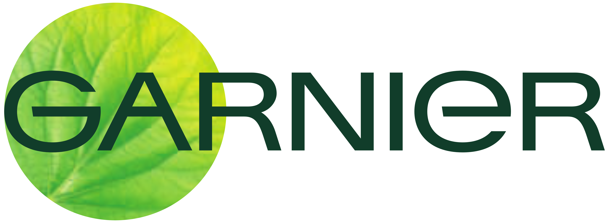
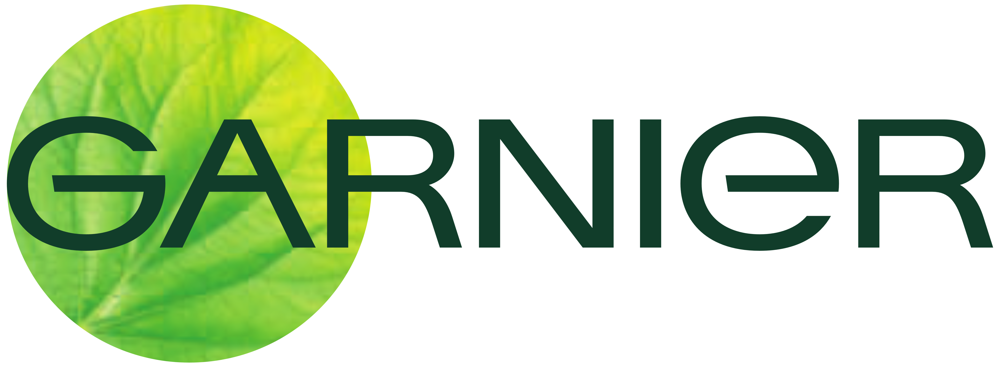
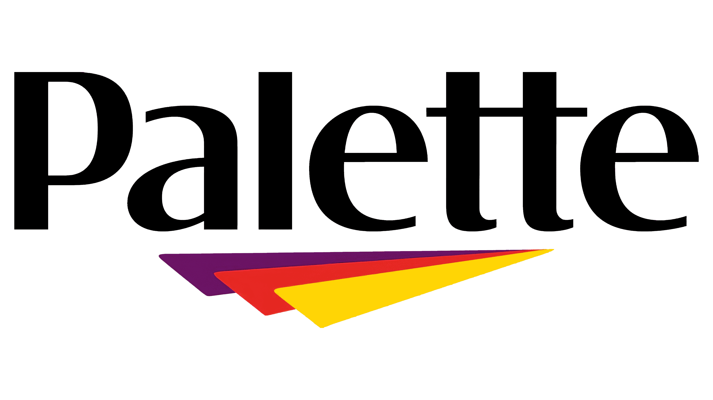
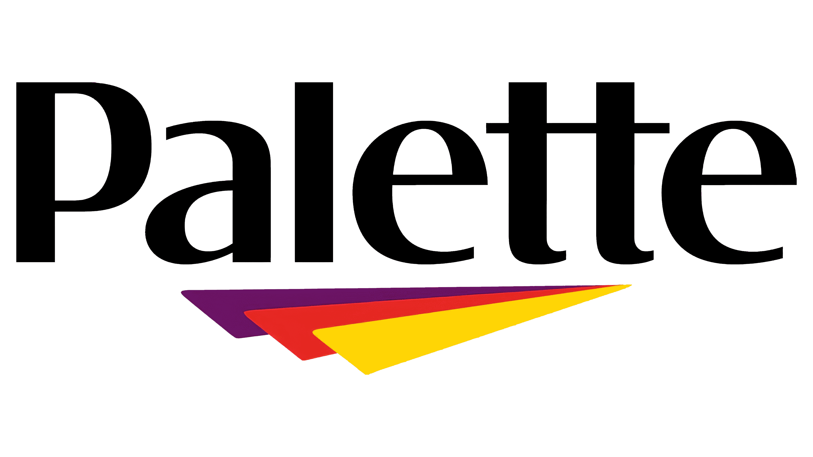

Pudra este un magazin de cosmetică naturală și organică care selectează numai produse eficiente și sigure, formulate cu cele mai excepționale ingrediente. Astăzi, suntem mândri că putem să ne împărtășim pasiunea pentru cosmetică în orașul nostru, Rîșcani. Doar aici veți găsi produse de marcă pentru viața de zi cu zi: machiaj, îngrijire a pielii și părului, loțiuni de corp...
Noi înțelegem cât de dificil poate fi să alegeți produsele cosmetice potrivite. Așadar, sortimentul magazinului conține produse pentru tenul cu orice nevoie. Există produse pentru toate vârstele și tipurile de piele. Magazinul Pudra fost creat astfel încât să puteți cumpăra în mod profitabil produse cosmetice pentru: față, în funcție de caracteristicile pielii; îngrijirea întregului corp; păstrarea frumuseții părului. "Pudra" nu este numai despre cele mai bune produse cosmetice pentru femei. Aici veți găsi produse necesare întregii familii. Gama include produse de îngrijire pentru bărbați, precum și produse pentru copii, care se disting printr-o compoziție mai blândă și mai sigură. Magazinul dispune de un sistem de plată flexibil, care facilitează fiecărui client să aleagă varianta cea mai convenabilă pentru el.
Magazinul "Pudra" este conceput în așa fel încât orice client să se simtă nu mai puțin important decât clienții centrelor comerciale scumpe. De aceea am dezvoltat ambalaje frumoase și am acordat o atenție deosebită confortului cumpărăturilor pe site-ul "Pudra".
Dorința magazinului nostru, "Pudra" este de a oferi fiecărei doamne/domnișoare cele mai impecabile produse cosmetice la un preț accesibil.
Parteneri


 



 
